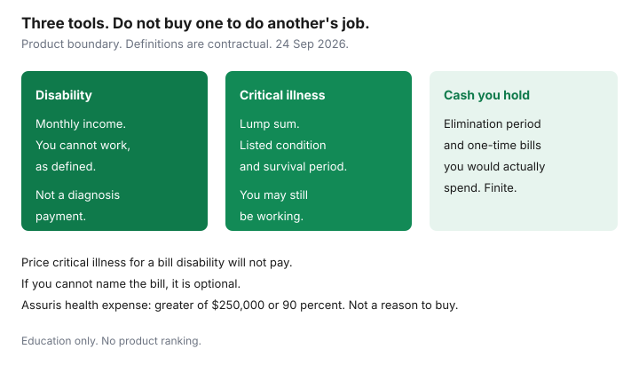

Insurance · Canada
Critical Illness Insurance in Canada: A Worth-It Framework Beside Life and Disability
Critical illness insurance pays a lump sum if you are diagnosed with a condition on a list and you meet the rest of the contract, including a survival period. Disability insurance pays a monthly income if you cannot work, as the policy defines work. They do not substitute for each other. A household that buys a critical-illness policy because it is afraid of “being sick,” and already has long-term disability that would pay the mortgage, has often bought a second product for a different month. This page is a way to decide whether that second product is doing work your emergency fund and your disability coverage do not already do. It is education. It is not a sales argument that every household needs a critical-illness policy.
Disclosure: This page is education. There is no natural affiliate offer for a critical-illness product here, and we do not rank insurers. Saving Optimizer does not claim an insurer partnership. We do not sell policies. Contract features such as a 30-day survival period are common market patterns, not a statute. The contract you are offered controls. Pages were read on 24 Sep 2026.
Key takeaways
- Critical illness pays a lump sum for a listed diagnosis, usually whether or not you are working. Disability pays monthly income because you cannot work. One does not replace the other.
- Read the condition list, the survival period, and the early-stage exclusions before you compare premiums. A cheaper policy with a shorter list is a different promise.
- The clearest use is a one-time cost while you are still working or while disability is delayed: a mortgage payment, travel for care, a spouse’s unpaid leave, a home change.
- If disability income plus cash you can spend already covers that shock, critical illness is optional. Fear of cancer is not a needs test.
- Workplace critical-illness riders are often a small multiple of salary and end with the job. Employer-paid premiums are generally a taxable benefit. Confirm the T4.
- Assuris treats critical illness as a health-expense benefit: the greater of $250,000 or 90 percent if a member insurer fails. That is failure protection, not a reason to buy the product.
What CI typically pays (lump sum) vs what disability pays (monthly income)
Put the two contracts in two columns before anyone shows you a combined “living benefits” package.
| Question | Critical illness | Disability |
|---|---|---|
| What is paid | A lump sum you choose at purchase, if the definition is met. | A monthly amount, often a percentage of income up to a cap, for as long as you meet the disability definition and the benefit period lasts. |
| What triggers it | A listed diagnosis, a severity test, and usually a survival period. You can still be working. | You cannot do your job, or any suitable job, as the contract defines it. A diagnosis alone is not enough. |
| What it is for | A one-time hole: debt, travel, care, a renovation, a spouse off work. | The paycheque that stopped. Rent, food, and the mortgage, month after month. |
| What it will not do | Replace a salary for three years. A $50,000 lump sum is not income insurance. | Pay you because you had a listed illness and went back to work after six weeks, if you no longer meet the disability test. The elimination period may eat those six weeks anyway. |
Life insurance is a third column. It pays because someone died. It does not pay a living benefit because you were diagnosed, unless you bought a rider that says so, and that rider has its own definition. The needs guide sizes the death benefit. Do not reduce it to fund a critical-illness premium until you have done the test on this page. The LTD gaps guide is the monthly column. Read it before you assume the workplace plan is “two-thirds of salary, tax-free, to age 65.” It usually is not.

Covered conditions, survival periods, and exclusion lists to read before buying
Premiums are not comparable until the definitions match. Ask for the list and read four parts of it.
- Which conditions. Cancer, heart attack, and stroke are the core of most Canadian contracts. Longer lists add conditions with their own severity tests. A list of 25 is not automatically better than a list of 4 if the four are the ones you are insuring and the definitions are stricter on the long list. Compare definitions, not the count.
- Early-stage cancer and “cancer” that is excluded. Many definitions exclude some early or specified cancers, or pay only a partial amount. Read the exclusion, not the headline.
- Survival period. A common contract pattern is that the insured must survive a stated number of days after diagnosis, often 30. That is a product habit, not a law. If the contract says 30 days and the person dies on day 20, the critical-illness benefit is not paid. Life insurance, if it is in force, is the benefit that responds to death. Do not buy critical illness as a substitute for a death benefit.
- A waiting period at the start. Cancer definitions often include a moratorium, commonly discussed as 90 days from the issue date, during which a cancer diagnosis is not covered. Confirm the number on the contract you are signing. A policy bought after a screening test is the wrong order.
Also read pre-existing condition language, what happens if you are diagnosed while outside Canada, and whether the benefit is reduced after a birthday. Exclusions are the product. A conversation that skips them is a premium comparison, not a coverage comparison.
Use cases: mortgage bridge, travel for care, income while recovering but still working
The lump sum is worth pricing when you can name the bill it would pay and disability income would not.
- A mortgage bridge. Disability may pay monthly after an elimination period, and the amount may be capped and taxable. A lump sum can clear a slice of principal or cover payments during the unpaid waiting period. Size it to that hole, not to the entire mortgage, if the monthly benefit would carry the rest.
- Travel and care. Treatment in another city, a parent who has to fly in, a month in a residence near a hospital. Provincial health insurance does not buy those. Travel medical insurance is for a trip you chose to take, not for this. The lump sum is unrestricted cash if the contract pays you, not the hospital.
- You are still working. Some diagnoses do not meet a disability test because you can still do the job, perhaps part time, perhaps from home. Disability pays little or nothing. The household still has drug costs, a reduced bonus, or a spouse who cut hours. That is the cleanest critical-illness case: the income did not fully stop, and the shock is real.
- A one-time home change. A bathroom, a bedroom on the main floor. Disability income might carry the mortgage and still leave no capital for the renovation.
If you cannot name the bill, you are buying a feeling. Price the feeling against the premium for the years until the need declines. A labelled sketch: $40 a month for 20 years is $9,600 of premiums for a $50,000 benefit you may never claim. That can still be a rational buy if a $50,000 shock would derail the house and you cannot save the $50,000. It is a poor buy if you already hold $50,000 in a taxable account you would actually spend. The sketch is not a premium. Get the real one before you judge it.
When emergency fund + disability coverage already handles the risk
Stop, and do not buy, when all three of these are true.
- You have disability coverage that would pay enough, after tax and after offsets, to run the household. You have read the booklet, including the occupation test after the first two years and the monthly cap. If you have not, you do not know that this line is true.
- You hold cash that covers the elimination period plus the one-time bills you listed above. An emergency fund that exists only on a spreadsheet, earmarked for a job loss you would never invade for illness, does not count.
- A partial income — you working at 70 percent, a spouse still employed — covers the rest. The lump sum would be a comfort, not the difference between keeping and selling the house.
Buy, or at least price, when any one of those fails: no disability coverage because you are self-employed and have not bought it, a group plan with a cap far below your spending, or cash that would be gone in the elimination period. In that case the first product to price is usually disability, because the multi-year income hole is larger than a one-time lump sum. Critical illness comes second, for the hole disability does not fill. Self-employed readers should use the disability guide’s personal-policy section before they add a lump-sum product on top of an income hole.
Do not buy critical illness instead of life insurance if someone depends on your income after you die. And do not buy it instead of disability if the risk you actually lose sleep over is a year without a paycheque. The products are neighbours. They are not substitutes.
Workplace CI riders vs individual policies
Employers sometimes offer a critical-illness benefit of a flat amount or a small multiple of salary, often with a short condition list. Read it the way you read group life. It is convenient. It ends when the job ends, or when the employer removes the benefit. It can be reduced at an age the booklet states. A pre-existing condition limitation may apply to people who join later. You generally cannot take the group rate with you, or you can only convert on terms the booklet spells out. Assume you cannot until you have read the sentence.
Tax is the other difference from group long-term disability. Employer-paid premiums for group disability are generally not a taxable benefit, while the disability benefit itself is taxable if the employer paid the premium. Employer-paid critical illness premiums are generally reported as a taxable benefit. The lump-sum benefit is a different question from the premium; do not assume it is taxed like a paycheque, and do not assume it is tax-free without asking. Confirm the T4 and ask a tax preparer. This page is not tax advice. An individual policy you pay for yourself has a premium you feel every month and a contract you can keep after you resign, subject to the renewal terms. Compare the group amount to the bill you named. A $25,000 group benefit does not close a $80,000 hole. It may make an individual policy for the difference the only piece worth pricing. Tell the individual insurer about the group benefit so you are not paying twice for the same slice without meaning to.
Assuris health-expense protection context for CI benefits
Assuris lists critical illness with health-expense benefits. The guarantee, read 24 Sep 2026, is the greater of $250,000 or 90 percent of the benefit if a member insurer fails. A $75,000 policy is under the floor. A $400,000 policy is protected at 90 percent, which is $360,000, so $40,000 sits outside the guarantee at that one member. The arithmetic is on the Assuris guide. It is failure protection. It is not a reason to buy critical illness, and it is not a reason to inflate the lump sum toward $250,000 so that you “use the floor.” The floor does not pay you because you became ill. The contract does, if the definition is met and the insurer is solvent. If the insurer is not, the floor limits what continues.
Group and individual benefits are separate Assuris applications. A small group rider plus a personal policy are not one combined health-expense pot you should net at the kitchen table. If you ever held more than the 90 percent crossover at a single member, that is the diversification question on the Assuris page, after you have decided the lump sum is needed at all.
Sources & date stamps
- Financial Consumer Agency of Canada, getting insurance — compare what a policy pays and what it excludes. Used 24 Sep 2026.
- Assuris, how am I protected — health expense, including critical illness, the greater of $250,000 or 90 percent. Used 24 Sep 2026.
- Survival periods, cancer moratoriums, and condition lists are contractual. This page does not treat 30 days or 90 days as a national rule.
Frequently asked questions
Does critical illness insurance replace disability insurance?
No. Critical illness pays a lump sum for a listed diagnosis, often even if you are working. Disability pays monthly income because you cannot work. A household can need one, both, or neither.
What is a survival period?
Many contracts require you to survive a stated number of days after diagnosis, often 30, before the lump sum is paid. That is a contract term, not a statute. If death is the risk, that is life insurance.
When is critical illness not worth buying?
When disability income would actually pay the bills and you already hold cash for the one-time costs you can name. If you cannot name the bill, you are pricing a feeling.
Does a workplace critical illness benefit follow me if I quit?
Assume it ends with the job until the booklet says otherwise. Employer-paid premiums are generally a taxable benefit. Confirm the T4. This page is not tax advice.
Is this a recommendation to buy critical illness insurance?
No. Education only. We do not rank insurers and we do not claim a partnership. Assuris health-expense protection is not a reason to buy the product.